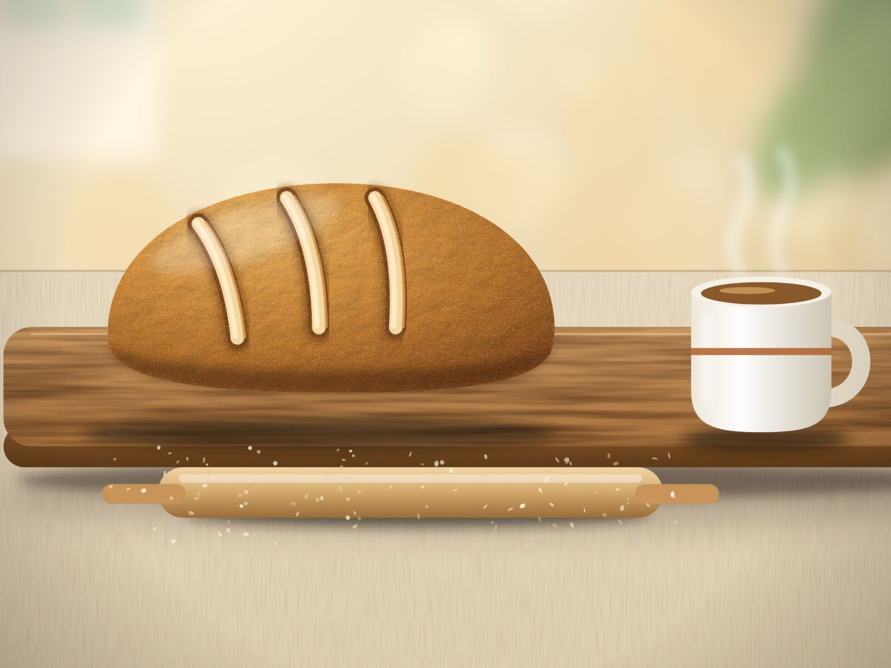

Keto wcale nie jest trudne: 7 prostych zasad na start
Keto brzmi groźnie: liczenie, egzotyczne składniki, dużo zasad. W praktyce wystarczy zacząć od jednej zmiany. Oto 7 prostych zasad na start.

Gdy słyszysz „dieta ketogeniczna”, pewnie widzisz w głowie tabelki, ważenie każdego grama i składniki, których nie kupisz w żadnym sklepie. Prawda jest mniej straszna. Keto to w gruncie rzeczy jedna zasada – mało węglowodanów – a cała reszta to przyzwyczajenie i dobry plan na pierwsze tygodnie.
W skrócie
- Podstawa keto to bardzo mało węglowodanów (zwykle kilkadziesiąt gramów dziennie), umiarkowana ilość białka i więcej tłuszczu.
- Nie musisz zmieniać wszystkiego naraz. Zacznij od jednego posiłku.
- Największy kryzys dotyczy pieczywa, dlatego warto mieć zaplanowany chleb keto.
- Przed startem porozmawiaj z lekarzem, zwłaszcza jeśli przyjmujesz leki na cukrzycę lub ciśnienie.
Czym jest dieta keto – w dwóch zdaniach
Dieta ketogeniczna polega na jedzeniu bardzo małej ilości węglowodanów, umiarkowanej ilości białka i stosunkowo dużej ilości tłuszczu. Gdy węglowodanów jest mało, organizm częściej korzysta z tłuszczu jako paliwa i wytwarza tzw. ciała ketonowe – stąd nazwa.
Orientacyjnie mówi się o granicy około 20–50 g węglowodanów dziennie. To jednak punkt wyjścia, a nie przepis dla każdego. Ostateczną ilość warto ustalić z lekarzem lub dietetykiem, bo inaczej będzie wyglądać u osoby zdrowej, a inaczej u kogoś z cukrzycą typu 2.
Zanim zaczniesz: jedna rozmowa z lekarzem
Keto nie jest dla każdego. Zmianę diety skonsultuj wcześniej ze specjalistą, zwłaszcza przy cukrzycy (szczególnie leczonej insuliną lub lekami obniżającymi poziom cukru), chorobach nerek, wątroby i trzustki oraz w ciąży i podczas karmienia piersią.
Po czterdziestce to rozsądne podwójnie: w tym wieku wiele osób przyjmuje już leki na nadciśnienie, cholesterol lub cukier, a ich dawki mogą wymagać dostosowania – ale wyłącznie pod kontrolą lekarza. Wystarczy jedna wizyta, żeby zacząć spokojnie.
7 prostych zasad na start
1. Zacznij od jednej zmiany, nie od rewolucji
Nie wyrzucaj całej kuchni pierwszego dnia. Zmień jeden posiłek, najlepiej śniadanie: jajka z warzywami zamiast kanapek z bułką. Gdy to wejdzie w nawyk, dołóż drugi posiłek. Małe kroki działają lepiej niż zryw, po którym wracasz do starych przyzwyczajeń po tygodniu.
2. Naucz się czytać etykiety
Na opakowaniu szukaj wartości „węglowodany” oraz „w tym cukry”. Wiele osób liczy tzw. węglowodany netto (węglowodany pomniejszone o błonnik), ale sposób liczenia najlepiej ustalić z dietetykiem. Uważaj na cukier ukryty tam, gdzie go nie oczekujesz: w sosach, niektórych wędlinach, musztardach, jogurtach smakowych i gotowych przyprawach.
3. Zbuduj talerz z trzech części
Nie trzeba skomplikowanych przepisów. Wystarczy prosty schemat:
- białko: jajka, mięso, ryby, sery,
- warzywa o niskiej zawartości węglowodanów: sałaty, szpinak, brokuły, cukinia, kalafior, ogórki,
- tłuszcz: oliwa, masło, awokado, orzechy i nasiona.
Żeby nie łamać się w chwili głodu, miej w domu kilka rzeczy „zawsze pod ręką”: jajka, ser, masło, oliwę, mrożone warzywa, orzechy i coś do pieczywa keto.
4. Zaplanuj pieczywo, zanim zatęsknisz
To właśnie pieczywo jest najczęstszym miejscem, w którym keto się „rozsypuje”. Kromka chleba towarzyszy nam od dzieciństwa, więc samo wycięcie jej z jadłospisu rzadko działa na dłuższą metę. Lepiej mieć gotowy zamiennik: chleb lub bułki z mąk o niewielkiej zawartości węglowodanów, np. migdałowej czy z mielonego siemienia lnianego, z dodatkiem babki płesznik.
Jeśli nie wiesz, czym różnią się te składniki, zajrzyj do naszego przewodnika po mąkach keto. A jeśli Twój pierwszy keto chleb wyszedł gumowy, przeczytaj, dlaczego tak się dzieje i jak tego uniknąć.
5. Pij wodę i dbaj o elektrolity
W pierwszych dniach po ograniczeniu węglowodanów organizm traci sporo wody i elektrolitów. U części osób pojawia się wtedy zmęczenie, ból głowy lub rozdrażnienie (potocznie „keto grypa”). Pomaga regularne picie wody, a słony bulion bywa dobrym pomysłem – o ile lekarz nie zalecił Ci ograniczania soli, co przy nadciśnieniu jest częste. Jeśli złe samopoczucie jest silne albo nie mija, skontaktuj się z lekarzem.
6. Gotuj raz, jedz dwa razy
Największym sprzymierzeńcem początkującego jest zapas. Upiecz bochenek chleba keto, pokrój go na kromki i zamroź – wyjmiesz tyle, ile potrzebujesz. Ugotuj od razu kilka jajek na twardo, upiecz większą porcję mięsa. Gdy w domu czeka gotowe jedzenie, nie sięgasz po pierwszą rzecz z półki.
7. Bądź wyrozumiały i obserwuj, jak się czujesz
Nie ma „idealnego keto”. Jeden wyjątek nie przekreśla tygodnia. Zwracaj uwagę na samopoczucie, energię i sen, a w porozumieniu z lekarzem zaplanuj kontrolne badania (np. poziom glukozy i lipidogram). Dieta ma Ci służyć, a nie Cię stresować.
Keto po 40-tce: na co zwrócić uwagę
- Leki. Jeśli przyjmujesz leki na cukrzycę, ciśnienie lub cholesterol, nie zmieniaj dawek samodzielnie. Zrób to z lekarzem.
- Regularne badania. Kontrolne wyniki pokażą, jak organizm reaguje na nowy sposób jedzenia.
- Błonnik. Przy małej ilości węglowodanów łatwo o jego niedobór. Pomagają warzywa, mielone siemię lniane i babka płesznik (zawsze popijana wodą).
- Ruch. Nie musi być intensywny. Codzienny spacer wystarczy, by poczuć różnicę.
A co z pieczywem i słodyczami?
To pytanie zadaje każdy: „dobrze, ale czy będę mógł jeszcze zjeść kromkę chleba albo kawałek sernika?”. Tak – w wersji keto. Domowe pieczywo, bułki i serniki z mąk o niewielkiej zawartości węglowodanów i bez cukru są możliwe, pod warunkiem że przepis jest porządnie przetestowany. Właśnie nad takimi przepisami pracuje nasza rodzinna piekarnia.
Chcesz zacząć już teraz? Zobacz, co przygotowujemy w sklepie i na stronie ebooka Keto pieczywo, a formularz poniżej wyśle Ci darmowy zestaw 5 przepisów na chleb i bułki.
Najczęstsze pytania o keto
Czy muszę liczyć każdy gram węglowodanów?
Na początku warto: przez 2–3 tygodnie zapisuj, co jesz, żeby zorientować się, gdzie ukrywają się węglowodany. Z czasem wiele osób opiera się na prostych schematach i listach produktów. Jak dokładnie liczyć, najlepiej ustalić z dietetykiem.
Czy na keto można jeść owoce?
Większość owoców zawiera za dużo cukru, ale niewielkie porcje malin, truskawek czy jagód zwykle mieszczą się w dziennym limicie. Zawsze sprawdź, ile węglowodanów wnosi dana porcja.
Jak długo trwa przestawienie organizmu?
To bardzo indywidualne. Zwykle mówi się o kilku dniach do kilku tygodni, w czasie których możesz czuć się słabiej. Jeśli objawy są silne lub długotrwałe, skonsultuj się z lekarzem.
Czy keto jest dla każdego?
Nie. Wymaga ostrożności lub jest niewskazane m.in. przy niektórych chorobach nerek, wątroby i trzustki, przy cukrzycy leczonej insuliną lub lekami obniżającymi cukier bez nadzoru lekarza oraz w ciąży i podczas karmienia piersią. Przed zmianą diety porozmawiaj ze specjalistą.
Czy na keto można jeść chleb?
Zwykły pszenny chleb zawiera zbyt dużo węglowodanów. Można za to jeść pieczywo keto, przygotowane z mąk o niewielkiej zawartości węglowodanów, np. migdałowej lub z siemienia lnianego, z dodatkiem babki płesznik. Więcej w artykule o mąkach keto.